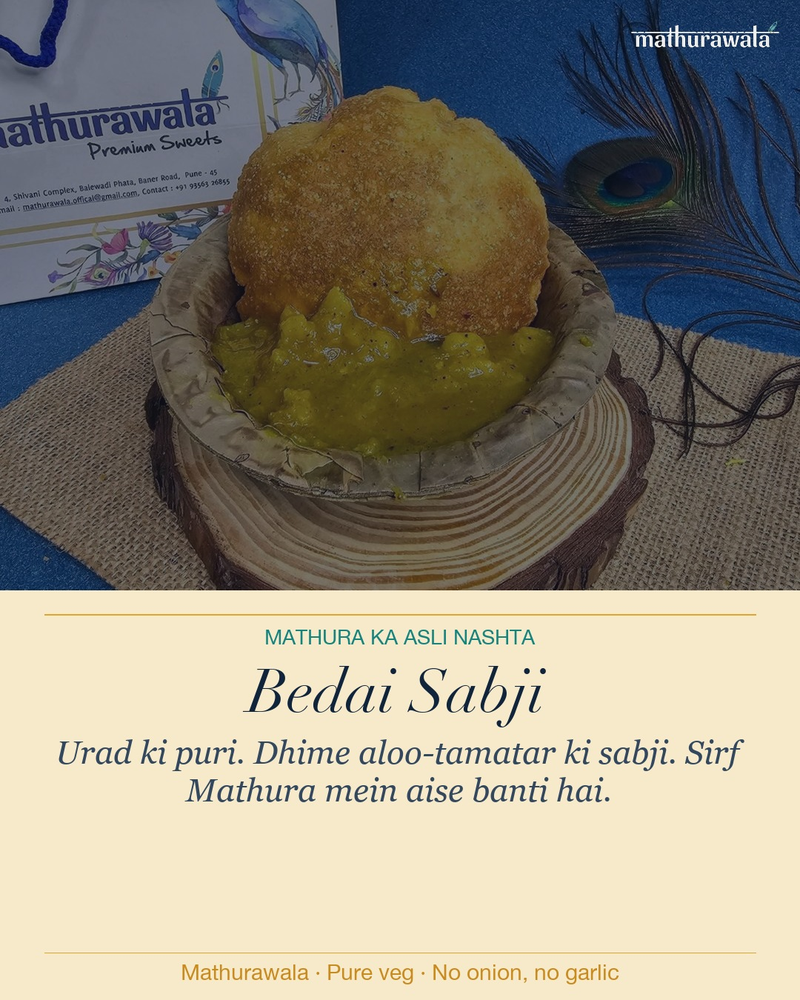
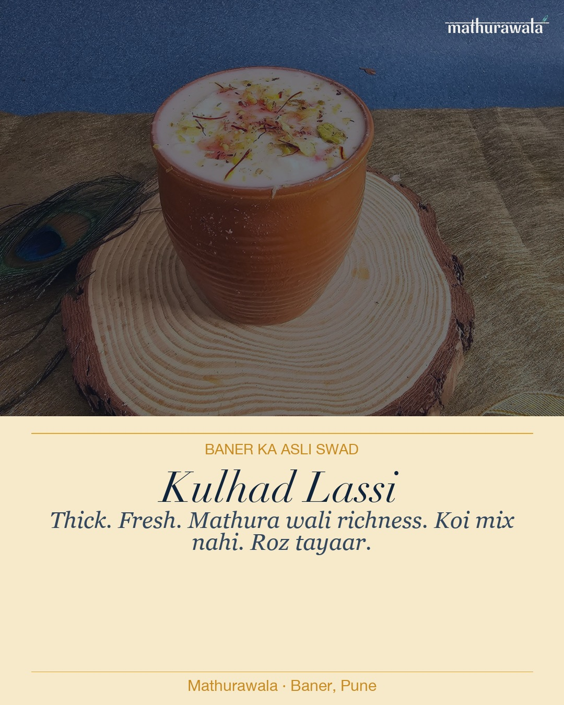
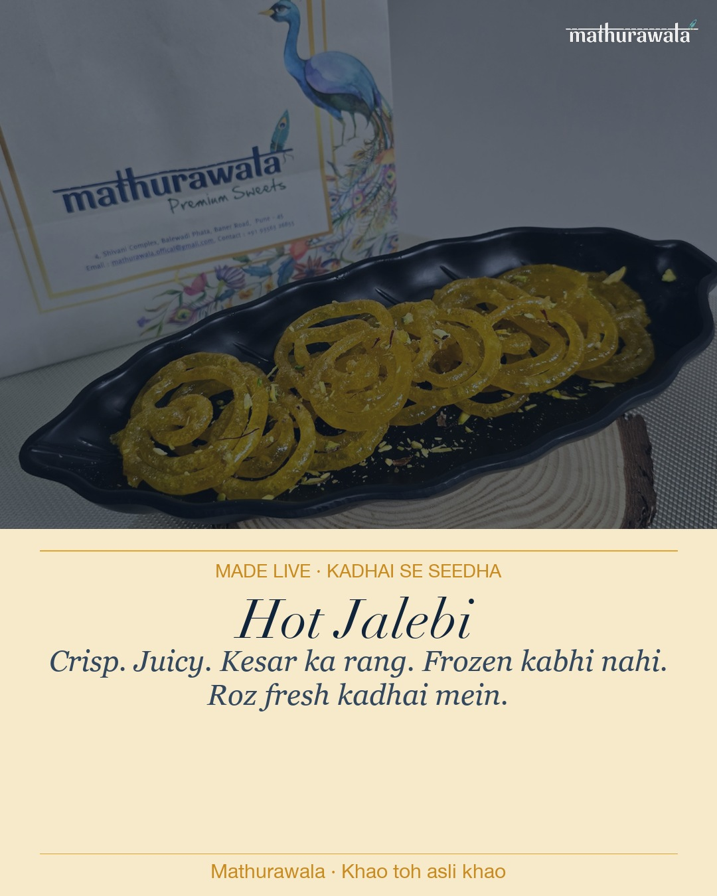
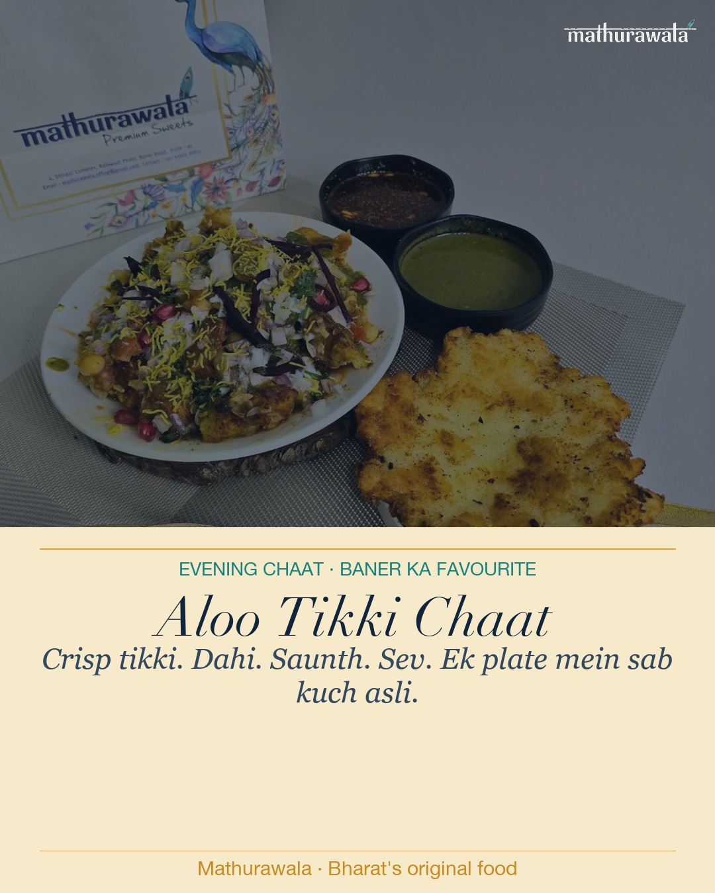

Week 7 · Mon · 9 AMFeed · 1080x1350
Bedai Sabji — the rarest morning on Baner's plate
Why: Bedai is even rarer and more distinctively Mathura than kachori. Monday morning 9 AM catches the "where to eat breakfast" decision window. The no-onion no-garlic hook pulls in Jains, Vaishnavas, and Navratri observers year-round.
Bedai toh sirf Mathura mein banti hai.
Urad ki khari puri. Dhime pakaye aloo-tamatar ki sabji.
Hing ka chhaunk. Bilkul Mathura wala.
Koi garlic nahi. Koi onion nahi.
3,000 saal se aise hi banta hai.
Mathurawala mein milti hai.
Baner, Pune. Subah 9 baje se.
Radhe Radhe 🦚
#bedaisabji #mathura #brajfood #mathurawala #purevegetarian #nooniononogarlic #punefood #baner #morningnashta

Week 7 · Wed · 12 PMFeed · 1080x1350
Kulhad Lassi — the Baner afternoon ritual
Why: Mid-week midday catches the IT crowd near Baner/Balewadi deciding lunch. Kulhad lassi is high-visibility (the kulhad gives it great photo value) and a strong differentiator vs every other joint. A great hook for people who don't know us yet.
Kulhad mein chai nahi, lassi.
Thick. Chilled. Ek ghoonth aur sab bhool jaate ho.
Made fresh, real milk, asli Mathura wali richness.
Baner ke best kulhad lassi ka secret?
Koi readymade mix nahi.
Desi style. Roz.
Mathurawala, Baner.
Khao toh asli khao. Radhe Radhe 🦚
#kulhadlassi #lassi #mathurawala #punefood #baner #brajfood #mathura #asliswaad #summerlassi

Week 7 · Fri · 7 PMFeed · 1080x1350
Hot Jalebi — the made-live proof post
Why: Friday 7 PM is peak "what's for dinner tonight" decision time. Jalebi is a universal sweet everyone knows but rarely gets made-live. The post is short and punchy, anchored on the made-fresh-right-now promise. Pairs beautifully with a Reel of jalebi coiling in the kadhai.
Friday ki shaam, ek plate hot jalebi.
Crisp. Juicy. Kesar ka rang.
Kadhai se seedha, jab aap order karein.
Koi frozen nahi. Koi reheated nahi.
Har plate live banti hai.
Mathurawala, Baner, Pune.
Khao toh asli khao. Radhe Radhe 🦚
#jalebi #hotjalebi #madeLive #mathurawala #punefood #baner #mathura #asliswaad #sweettooth

Week 8 · Sat · 5 PMFeed · 1080x1350
Aloo Tikki Chaat — the Saturday evening crowd-puller
Why: Aloo Tikki Chaat is Google-verified as one of our top-tagged items (from the 706-review data). Saturday 5 PM is peak "where to take the family this evening" time. This post triggers people who already know us to come back, and shows newcomers what evening chaat looks like here.
Baner ki shaam ka mukadar — aloo tikki chaat.
Crisp tikki. Meethi chutney. Teekhi wali.
Thick dahi. Sev on top.
Ek baar kha lo, wapas aana padta hai.
Asli chaat ki koi shortcut nahi hoti.
Asli ingredients. Asli technique.
Mathura ka.
Mathurawala, Baner, Pune.
Khao toh asli khao. Radhe Radhe 🦚
#alootikki #chaat #alootikkichaat #mathurawala #punefood #baner #mathura #eveningchaat #asliswaad